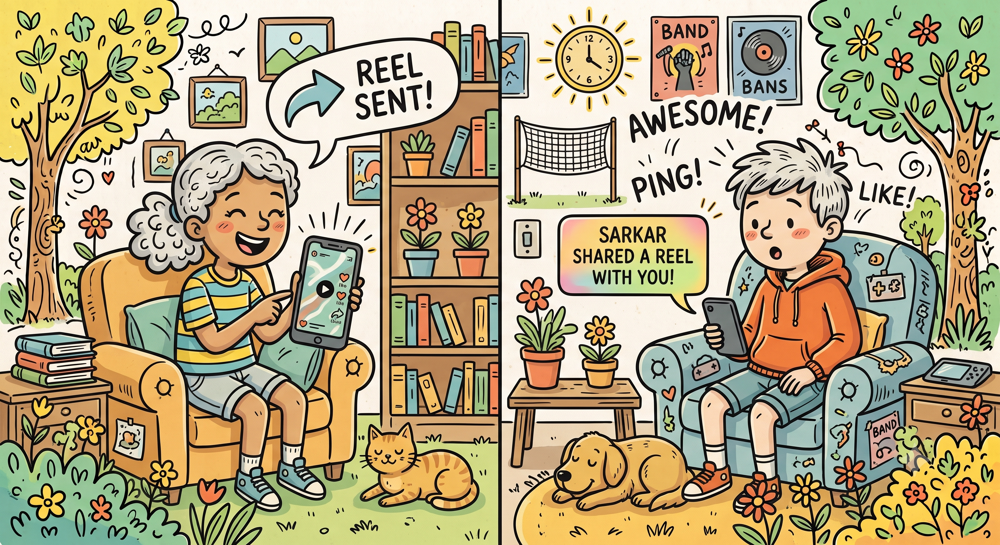
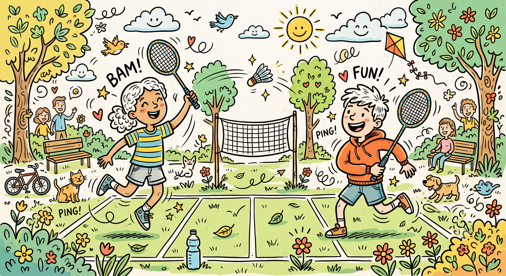

written on a night when I couldn't sleep
Dear Sarkar 🥹,
I don't know if these words will ever reach you.
And maybe they shouldn't.
You don't owe me a conversation. You don't owe me an explanation. You don't even owe me the chance to explain myself.
But there are some things I have wanted to say, not because I expect anything from you, but because I finally understand that an apology should not begin with "but."
So this time, there are no excuses here.
I am writing this because I was wrong.
chapter one
Everything became complicated...

There are memories that don't look important while they are happening.
A random conversation. A stupid joke. A moment where neither of us had anything important to say. Sitting somewhere for no reason. Laughing at something that probably wasn't even funny.
But later, those ordinary moments become the ones you would give anything to experience exactly the same way again.
chapter two
The moment I wish I could rewrite
There is one moment I keep returning to.
Not because I want to change what happened. I know I can't.
I return to it because I wish I had been a different person in that moment.
"Maybe I had a reason..."
"Maybe you misunderstood..."
"I didn't mean it that way..."
None of these sentences undo what happened.
What matters is that I hurt you.
And whether I intended to or not, the hurt was real.
I must not lie to you..mujhe Kuch dusra tarika dhundhna chahiye tha..tujhe mnana chahiye tha.. tujhe smjhna chahiye tha..glti merii h saari mujhe pta hai tera naraz hona sahii h prr yaar dur jana to sahi nhi lgraha mujhe... mene bhaut se insan khoye hai pr tujhe nhi khona chahta.. mujhe nahi pta ki ye tujh tk phauchega ya nahii tu isse pdhegi ya nii..kabhi maanegi ya ..or maane na maane vo tujhpr hai..m to tujhe mnaunga or mnaate hii rhunga tujhe chordkr jane ka irada nahi hai yrr mera.
I wish I had stopped. I wish I had thought about how my actions would feel from your side instead of only thinking about mine.
chapter four
If I could go back...
I would listen instead of reacting.
I would think about your feelings, not only my intentions.
I would understand that one careless moment can damage something built over a long time.
one more memory

"Our us Time #Your Smiling time & my Tujhe dekhne vala time "
I don't want to use our memories as a reason for you to come back.
I just want to acknowledge that they mattered.
You mattered.
And I am sorry that someone who meant no harm to you became someone you needed distance from.
the apology
This is the part I should have said first.
I'm sorry for the everything.
I'm sorry for making you feel disappointed from me. .
I'm sorry that my actions made you question something that once felt safe.
I'm sorry for the trust I damaged.
And I'm sorry that the person who should have been careful with your feelings became the reason you had to protect them.
the last page
So this is where I leave the letter.
I don't know what you will think after reading this.
Maybe nothing.
Maybe anger.
Maybe sadness.
Maybe you will close this page and never open it again.
And that's okay.
I just wanted, at least once, to apologize without defending myself.
Without asking you to make me feel better.
Without asking you to forget what happened.
I hurt someone who trusted me. That is something I have to live with, learn from, and become better because of.
someone who should have known better
before the end...
One last thing I wanted to leave here.
I don't know if words are enough to say everything that I wanted to say.
Can We Start Again
Can you Please trust me again
Always with you